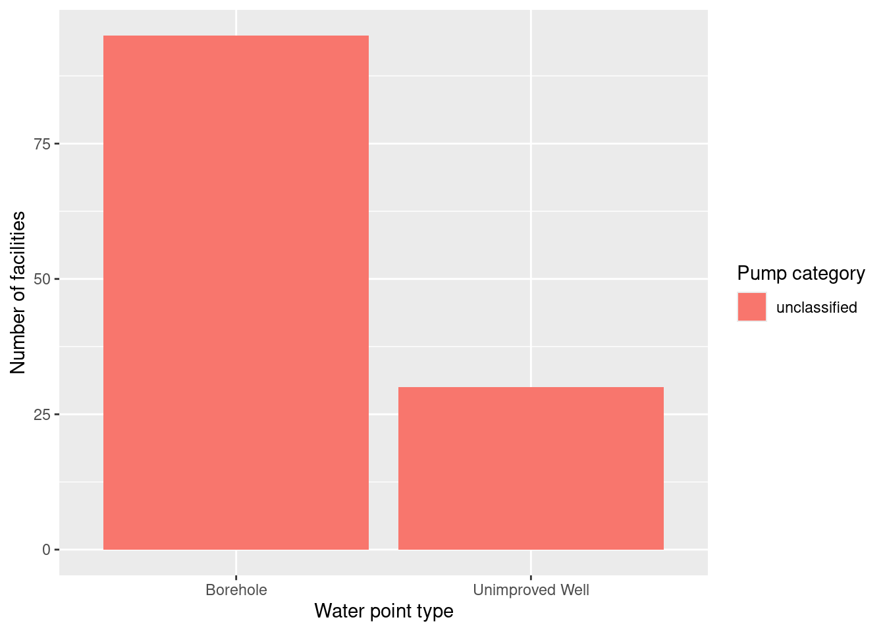

library(tidyverse)
library(here)Kebbi Zuru Water Mop-Up Facility Report
Project description
A rigorous, geo-referenced baseline facility inventory across Nigeria is created spanning from 2009 to 2011 with an additional survey effort to increase coverage in 2014, to build Nigeria’s first nation-wide inventory of water facility. The database includes 132,510 water facilities info in Nigeria.
… continuation
The goal of this database is to make the data collected available to planners, government officials, and the public, to be used to make strategic decisions for planning relevant interventions.
read_csv(here::here("data/raw/watermopupandbaselinenmisfacility.csv"))# A tibble: 132,510 × 17
water_point_type date_of_survey community ward is_improved functional
<chr> <date> <chr> <chr> <lgl> <lgl>
1 Borehole 2012-07-29 DABAI SEME RUMU… TRUE FALSE
2 Unimproved Well 2012-07-29 Gogadi Sanc… FALSE TRUE
3 Borehole 2012-07-28 UNGWAR SARKIN F… ZODI TRUE FALSE
4 Borehole 2012-07-28 Kobo Bedi TRUE TRUE
5 Borehole 2012-07-29 Kware Sanc… TRUE TRUE
6 Borehole 2012-07-30 Dabai Chor… TRUE TRUE
7 Unimproved Well 2012-07-29 DIGWABA RUMU… FALSE TRUE
8 Unimproved Well 2012-07-29 DIPASA RUMU… FALSE FALSE
9 Borehole 2012-07-29 TUNGA KIBIYA SANCI TRUE FALSE
10 Borehole 2012-07-30 Kori Gani Chir… TRUE TRUE
# ℹ 132,500 more rows
# ℹ 11 more variables: breakdown <chr>, lift_mechanism <chr>,
# facility_id <chr>, sector <chr>, facility_name <chr>,
# formhub_photo_id <chr>, gps <chr>, survey_id <chr>, unique_lga <chr>,
# latitude <dbl>, longitude <dbl>Write code to bring your data into a state where it’s ready for analysis.
# Step 0: Load raw data
raw_data <- read_csv(here::here("data/raw/watermopupandbaselinenmisfacility.csv"))
# Step 1: Rename columns (simplify names)
clean_data <- raw_data %>%
rename(
id = facility_id,
name = facility_name,
water_type = water_point_type,
lga = unique_lga,
pump_type = lift_mechanism,
survey = survey_id,
lat = latitude,
long = longitude
)
# Step 2: Select relevant columns
clean_data <- clean_data %>%
select(id, name, water_type, lga, pump_type, survey, lat, long)
# Step 3: Remove missing values
clean_data <- clean_data %>%
drop_na(id, name, water_type, lga, pump_type, lat, long)
# Step 4: (Simulate a join using a small internal lookup table)
# Example — categorizing pump types into “manual” vs “mechanized”
pump_lookup <- tibble(
pump_type = c("handpump", "electric_pump", "solar_pump", "motorized"),
pump_category = c("manual", "mechanized", "mechanized", "mechanized")
)
clean_data <- clean_data %>%
left_join(pump_lookup, by = "pump_type")
# Step 5: Create new variables
clean_data <- clean_data %>%
mutate(
facility_label = paste(name, "-", water_type),
valid_location = if_else(
lat >= -90 & lat <= 90 & long >= -180 & long <= 180,
TRUE, FALSE
)
)
# Filter data for kebbi_zuru LGA
kebbi_zuru_data <- clean_data %>%
filter(lga == "kebbi_zuru")
# View the cleaned dataset
glimpse(kebbi_zuru_data)Rows: 125
Columns: 11
$ id <chr> "QMVGI", "LGZDU", "XIOJU", "MHLFC", "YDAPE", "HQPRK", "…
$ name <chr> "Water Point", "Water Point", "Water Point", "Water Poi…
$ water_type <chr> "Borehole", "Unimproved Well", "Borehole", "Borehole", …
$ lga <chr> "kebbi_zuru", "kebbi_zuru", "kebbi_zuru", "kebbi_zuru",…
$ pump_type <chr> "Hand Pump", "Manual", "Hand Pump", "Hand Pump", "Hand …
$ survey <chr> "cec1f8e5-44f7-44c0-bc77-82879e2d9825", "c213c889-670b-…
$ lat <dbl> 11.48131, 11.34453, 11.49676, 11.35112, 11.28608, 11.38…
$ long <dbl> 5.193363, 5.262534, 5.438984, 5.229892, 5.233418, 5.237…
$ pump_category <chr> NA, NA, NA, NA, NA, NA, NA, NA, NA, NA, NA, NA, NA, NA,…
$ facility_label <chr> "Water Point - Borehole", "Water Point - Unimproved Wel…
$ valid_location <lgl> TRUE, TRUE, TRUE, TRUE, TRUE, TRUE, TRUE, TRUE, TRUE, T…# Optionally, save the cleaned subset
write_csv(kebbi_zuru_data, here::here("data/processed/kebbi_zuru_cleaned.csv"))Once you have your data in a state where it’s ready for analysis, save it as a CSV file in the data/processed folder
#| include: false
library(readr)
library(dplyr)
library(ggplot2)
library(gt)
library(scales)Introduction
This report summarizes facility-level survey data from the Water Mop-Up and Baseline NMIS Facility dataset, focusing on records from the Kebbi Zuru area. The dataset documents facility attributes such as water point type, lift mechanism, and geographic coordinates to support monitoring and planning. Exploring these indicators helps identify patterns in infrastructure and data quality for decision-making. The analysis follows reproducible data science practices(Ahmed et al. 2023; Yahaya et al. 2022).
Methods
The raw facility survey CSV was imported from the data/raw folder and cleaned into an analysis-ready dataset saved in the data/processed folder. Cleaning included renaming variables for clarity, selecting relevant fields, removing missing values for key variables, and creating derived fields such as a facility label and a location validity check. A small lookup table was joined to classify lift mechanisms into broader pump categories. Summary statistics and visualizations were produced using standard exploratory analysis and visualization principles(Victor et al. 2025).
Results
facilities_df <- read_csv(
"../data/processed/kebbi_zuru_cleaned.csv",
show_col_types = FALSE
)Summary statistics table
summary_tbl <- facilities_df %>%
summarise(
facility_count = n(),
mean_latitude = mean(lat, na.rm = TRUE),
median_latitude = median(lat, na.rm = TRUE),
sd_latitude = sd(lat, na.rm = TRUE),
mean_longitude = mean(long, na.rm = TRUE),
median_longitude = median(long, na.rm = TRUE),
sd_longitude = sd(long, na.rm = TRUE),
valid_location_rate = mean(valid_location, na.rm = TRUE)
)
gt(summary_tbl) %>%
fmt_number(columns = c(mean_latitude, median_latitude, sd_latitude,
mean_longitude, median_longitude, sd_longitude),
decimals = 4) %>%
fmt_percent(columns = valid_location_rate, decimals = 1)| facility_count | mean_latitude | median_latitude | sd_latitude | mean_longitude | median_longitude | sd_longitude | valid_location_rate |
|---|---|---|---|---|---|---|---|
| 125 | 11.4115 | 11.4221 | 0.0891 | 5.2496 | 5.2366 | 0.0847 | 100.0% |
Table @tbl-summary shows the number of facilities included in the Kebbi Zuru subset and summarizes the central tendency and variation of the geographic coordinates. The valid location rate indicates whether coordinates fall within plausible latitude/longitude ranges, which provides a quick check of spatial data quality.
Figure 1: Water point type distribution
facilities_df %>%
count(water_type) %>%
ggplot(aes(x = reorder(water_type, n), y = n)) +
geom_col() +
coord_flip() +
scale_y_continuous(labels = comma) +
labs(
x = "Water point type",
y = "Number of facilities"
)
Figure @fig-water-type highlights which water point types are most common in the dataset. The axis scaling uses comma formatting to improve readability when counts are large, and the flipped coordinates make category labels easier to read.
Figure 2: Pump category by water type
facilities_df %>%
mutate(pump_category = if_else(is.na(pump_category), "unclassified", pump_category)) %>%
count(water_type, pump_category) %>%
ggplot(aes(x = water_type, y = n, fill = pump_category)) +
geom_col(position = "dodge") +
scale_y_continuous(labels = comma) +
scale_fill_discrete(name = "Pump category") +
labs(
x = "Water point type",
y = "Number of facilities"
)

Figure @fig-pump-category compares how lift mechanism categories (manual vs mechanized vs unclassified) vary across water point types. The color scale and legend title make categories human-readable, while the scaled y-axis improves interpretation of facility counts.
Conclusions
The Kebbi Zuru subset contains a defined number of facilities, and coordinate summaries suggest the overall spatial spread of the records(Namadi, Z. A., Anaegbu, J. O., and Yahaya, A. A. 2024).
Water point types are not evenly distributed; some types appear substantially more common than others.
Pump categories show variation by water point type, and any “unclassified” records indicate lift mechanisms that may need cleanup or expanded mapping.
References
Ahmed, Saminu, Temitope Hafusat, Abdullahi Sarki Zayyan, and Aliyu Dadangarba. 2023. “Statistical Analysis of Domestic Water Demand and Supply for Kaduna North, Kaduna State.” European Journal of Engineering and Technology Research 8 (1): 26–31. https://doi.org/10.24018/ejeng.2023.8.1.2922.
Namadi, Z. A., Anaegbu, J. O., and Yahaya, A. A. 2024. “Analysis of Geochemical Parameters for Surface and Groundwater in Zuru Local Government Area of Kebbi State, Nigeria.” UMYU Scientifica 3 (2): 80–85. https://doi.org/10.56919/usci.2432.008.
Victor, Chima, Joseph Ayodeji Kupoluyi, Funmilola Folasade Oyinlola, and Victor Ojoajogwu Sule. 2025. “Prevalence and Factors Associated with Water, Sanitation and Hygiene (WASH) Facilities Deprivation Among Children in Nigeria.” BMC Pediatrics 25 (1). https://doi.org/10.1186/s12887-025-05463-5.
Yahaya, T., O. Ologe, C. Yaro, L. Abdullahi, H. Abubakar, A. Gazal, and J. Abubakar. 2022. “Quality and Safety Assessment of Water Samples Collected from Wells in Four Emirate Zones of Kebbi State, Nigeria.” Iranian Journal of Energy and Environment 13 (1): 79–86. https://doi.org/10.5829/ijee.2022.13.01.09.